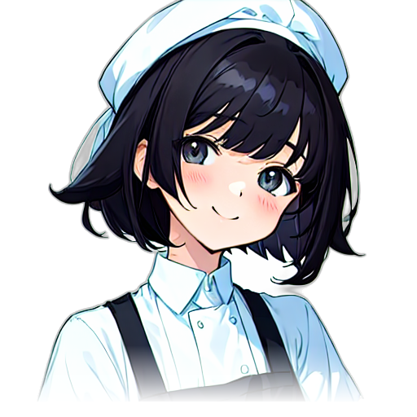
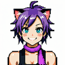
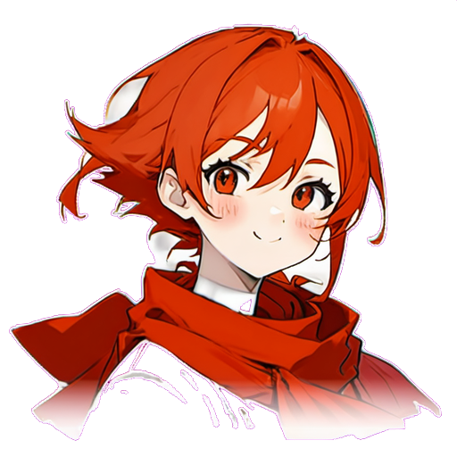
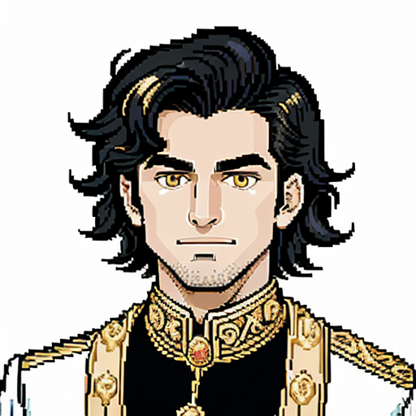

Characters (12)
스토리 대화에 등장하는 주요 캐릭터. 포트레이트 이미지 + 설정.

미미 (Mimi)
주인공
초보 미력사. 할머니가 남긴 낡은 식당을 물려받은 요리학교 졸업생. 겁이 많지만 책임감이 강하며, 식란이 시작된 날부터 매일 밤 정화 임무를 수행한다.
역할플레이어 캐릭터 / 서사 주도
색상■ 핑크 (#ff8899)
이모지👧

포코 (Poco)
행상인
미미 할머니의 오랜 협력자였던 마력 품은 고양이. 정화 도구 제작 장인이자 행상인. 붙임성 좋고 수다스럽지만 장사는 절대 양보하지 않는다.
역할행상인 NPC / 튜토리얼 가이드
색상■ 골드 (#ffaa33)
이모지🐱

린 (Rin)
라이벌
불꽃 요리사. 처음엔 미미와 경쟁하지만, 공동의 적 앞에서 점차 동료가 되어간다. 강렬하고 직설적인 성격. 화염 계열 도구에 특화된 미력사.
역할라이벌 → 동료 (2장 이후)
색상■ 레드 (#ff4444)
이모지🔥
메이지 (Mage)
연구자
디저트 전문 미력사이자 식란 연구자. 식란의 근본 원인을 학문적으로 추적하며, 미미에게 식란의 역사와 이론적 배경을 알려준다. 차분하고 분석적이다.
역할정보 제공 NPC / 연구자
색상■ 퍼플 (#cc88ff)
이모지🧁
유키 (Yuki)
시즌2 셰프
일식 전문 냉기 미력사. WCA 본선 진출자로, 챕터 7에서 미미와 합류한다. 차갑고 과묵하지만 완벽주의적 조리 기술을 가졌다.
역할시즌2 플레이어블 셰프
색상■ 아이스블루 (#88ccff)
해금6장 클리어 후
라오 (Lao)
시즌2 셰프
중식 전문 화력 미력사. 웍 하나로 수십 인분을 동시에 볶아내는 실력자. 챕터 8에서 미미와 합류. 호탕하고 의리 있는 성격.
역할시즌2 플레이어블 셰프
색상■ 차이나레드 (#ff6633)
해금7장 클리어 후

사케 오니 (Sake Oni)
보스
이자카야를 수호하던 식신. 정화된 사케 영기에 중독되어 타락한 옛 미력사. 9장 최종 보스.
역할9장 보스
색상■ 핫핑크 (#ff4488)
이모지🍶

주조 달인 (Sake Master)
보스
이자카야 심층부를 지키는 고대 일식 양조 정령. 사케 오니의 스승이자 원형. 12장 최종 보스.
역할12장 보스
색상■ 다크퍼플 (#8844bb)
이모지🍶
앙드레 (André)
동료
WCA 유럽 지부장. 파리 출신 미력사로, 별빛 비스트로 식란 사태를 조사 중이다. 13장에서 미미 팀에 합류.
역할13장 동료 NPC
색상■ 로얄블루 (#4169e1)
이모지🥐

셰프 누아르 (Chef Noir)
보스
파리 카타콩브 출신의 전 WCA 수석 미력사. 식란을 자연적 해방으로 보는 극단적 요리 철학의 소유자. 양식 아크 최종 보스.
역할양식 아크 최종 보스
색상■ 다크네이비 (#1a1a2e)
이모지🍴

아르준 (Arjun)
동료
마살라 문파 12대 계승자. 인도 향신료 시장의 식란을 대대로 수호해온 비밀 결사의 후계자. 17장에서 ???로 등장 후 18장에서 신원 공개.
역할인도 아크 동료
색상■ 황금앰버 (#d4a017)
이모지🪬

마하라자 (Maharaja)
보스
300년 전 향신료 왕국을 지배했던 자. 미력을 지배의 도구로 삼았다가 마살라 문파에 봉인되었다. 인도 아크 최종 보스.
역할인도 아크 최종 보스 (18장)
색상■ 다크골드 (#b8860b)
이모지👑